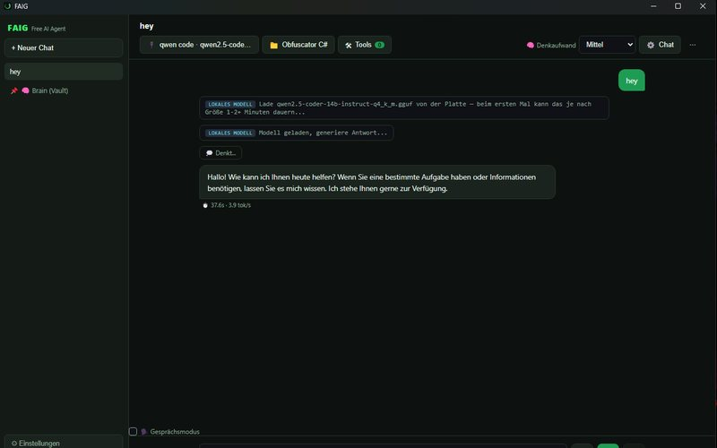

KI — 2026
FAIG
Ein KI-Agent, der Sprachmodelle lokal auf der eigenen Grafikkarte betreibt — als eigenständige Desktop-App, nicht als Website-Widget.

Überblick
FAIG, kurz für Free AI Agent, ist eine Electron-App, die einen KI-Agenten auf dem eigenen Rechner betreibt. Das Sprachmodell liegt als GGUF-Datei auf der Platte und wird über llama.cpp geladen. Die App kann im Netz suchen, mit Werkzeugen arbeiten und liest einen eigenen Wissensspeicher.
Die Aufgabe
Die meisten KI-Werkzeuge sind an einen Anbieter gebunden, brauchen einen Schlüssel und laufen im Browser. Wer an lokalen Projekten arbeitet, gibt damit bei jeder Anfrage Dateiinhalte aus der Hand — und zahlt pro Aufruf.
Der Ansatz
Eine Desktop-App, in der das Modell selbst auf dem Rechner liegt. Austauschbar über einen Modellordner, ohne Schlüssel, ohne laufende Kosten, ohne Verbindung nach außen, solange keine Websuche angestoßen wird.
Das System
Electron als Anwendungsrahmen, llama.cpp für die Modellausführung, lokale Datenhaltung für Chats und Projektordner. Der Denkaufwand ist je Anfrage einstellbar, Werkzeuge wie die Websuche werden einzeln zugeschaltet. Ein angehefteter Wissensspeicher steht allen Chats zur Verfügung.
Das Ergebnis
Läuft täglich im eigenen Betrieb. Jeder Lauf zeigt Dauer und Geschwindigkeit an, damit sich Modelle und Einstellungen vergleichen lassen.